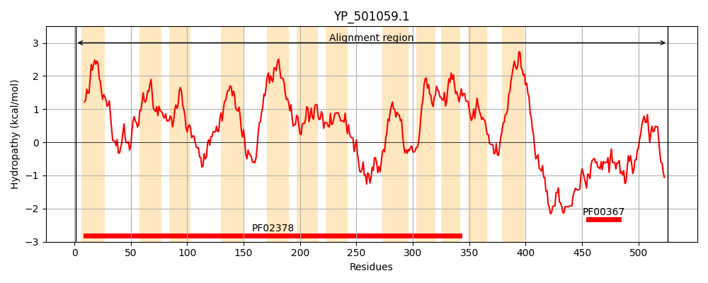
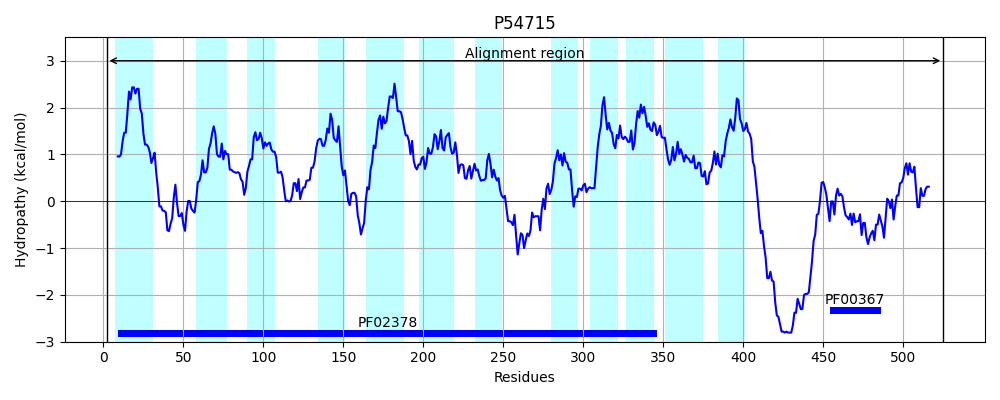
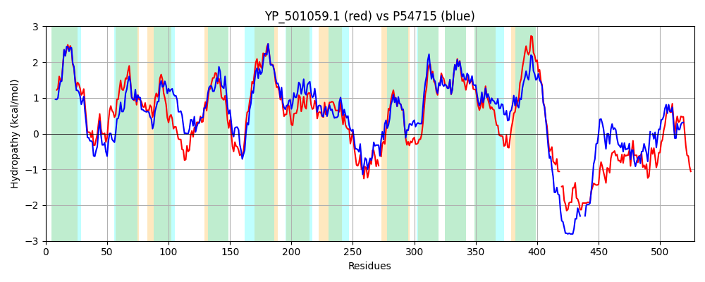

Hit Accession: P54715
Hit TCID: 4.A.1.1.8
Hit Description: gnl|BL_ORD_ID|10962 gnl|TC-DB|P54715|4.A.1.1.8 PTS system, arbutin-like IICB component (Phosphotransferase enzyme II, CB component) (EC 2.7.1.69) - Bacillus subtilis.
Mach Len: 528
e:0.000000
Query TMS Count : 12
Hit TMS Count: 12
TMS-Overlap Score: 10.500000
Predicted Substrates:CHEBI:6668;maltose
BLAST Alignment:
Score: 1577 , Bit scores: 612 bits, E-value: 0.0e+00, Alignment length: 528, Percentage identity: 56
Query: 1 MNAIKRFGSAMIVPVLMFAFFGIVLGFATLFKNPTIMGSLADQHTFWFKFWSVIESGGWVIFTHMEVVFVVGLPLSLAKKAPGHAALAALMGYLMFNTFINAILTQWPHTFGANLEKGVENVPGLKSIAGIATLDTNILGGIIISAIITWIHNRYYSKRLPEMVGVFQGLTFVVTISFFVMLPLAAITCVIWPTVQHGIGSMQHFIIASGYIGVWLYHFLERVLIPTGLHHFIYAPIEVGPVVVNHGLKAEWLQHLNEFAKSTKPLKEQFPY-GFMLQGNGKVFGCLGIALAMYATTPKENRKKVAALLIPATLTAVVVGITEPLEFTFLFIAPYLFVLHAVLAASMDTLMYAFGVVGNMGGGLLDFISTNWLPLGKEHWGTYVAQVIIGLIFVAIYFFLFRFLILKFDIPLPGRKKTE-EEVKLFSKQDYKNKKGDSVDSKRASSGNEYEDKAAYYLDGLGGKENIKDVTNCTTRLRLTVYDESKVADTEYFTHQQMAHGLVKSGKSIQVVVGMTVPQVREAFEQMV 526
M I+RFGSAM VPVL+FAF GI++G +TLFKN T+MG LAD FW++ W +IE GGW +F M ++F +G+P++LAKKA A L AL YL FN F++AILT W FG ++ + V GL IAGI TLDTNI+G I IS+I+ ++HNRY+ K+LP+ +G+FQG T++V ISFF+M+P+A IWP VQ GIGS+Q F++ASG +GVW+Y FLER+LIPTGLHHFIY P GP V G+ W QHL E+++S KPLKE FP GF L GN K+FG GIALA Y T KE +K VA LLIP TLTA+V GITEP+EFTFLFI+P+LF +HAVLAA+M T+MY GVVGNMGGGL++ ++ NW+PL H TYV Q++IGL F AIYFF+FRFLILKF+I PGR+K E +E KL+SK++Y+ +K + AS+ +D A Y++ LGGK+NI +VTNC TRLR++V DE+KV F AHG+V++GK+ QV++G++VPQ+RE E+++
Sbjct: 2 MQKIQRFGSAMFVPVLLFAFAGIIVGISTLFKNKTLMGPLADPDGFWYQCWYIIEQGGWTVFNQMPLLFAIGIPVALAKKAQARACLEALTVYLTFNYFVSAILTVWGGAFGVDMNQEVGGTSGLTMIAGIKTLDTNIIGAIFISSIVVFLHNRYFDKKLPDFLGIFQGSTYIVMISFFIMIPIALAVSYIWPMVQSGIGSLQSFLVASGAVGVWIYTFLERILIPTGLHHFIYTPFIYGPAVAEGGIVTYWAQHLGEYSQSAKPLKELFPQGGFALHGNSKIFGIPGIALAFYVTAKKEKKKLVAGLLIPVTLTAIVAGITEPIEFTFLFISPFLFAVHAVLAATMSTVMYMAGVVGNMGGGLIEAVTLNWIPLFGSHGMTYVYQILIGLSFTAIYFFVFRFLILKFNIATPGREKDEQQETKLYSKKEYRERKN---KDETASAAETADDTAFLYIEALGGKDNITEVTNCATRLRVSVKDETKVEPDSVF-RALGAHGVVRNGKAFQVIIGLSVPQMRERVEKIL 525 | Protein Hydropathy Plots: |
|---|
|  |  |
Pairwise Alignment-Hydropathy Plot:
|
|---|
|  |